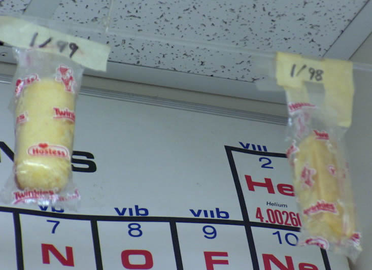

| |
| Carrots |
| Twinkies |
| Avocado |
| Pineapple |
| Turkey Sandwiches |
| Mangoes |
| Pizza |
| Potatoes |
| Other Resources |
If you bury a Twinkie in soil, do you know what will happen? Nothing! It certainly won't grow into a Twinkie tree because a Twinkie is not a fruit, a seed, a root, a stem, or a leaf, but it won't spoil either! The Twinkies in this picture are probably older than you! The one on the right is from 1998. In another school's science classroom, they had a Twinkie for 30 years that didn't spoil or get moldy because they have so many preservatives in them. Ew! Here's a list of ingredients in a Twinkie: * Enriched Wheat Flour - enriched with ferrous sulphate (iron), B vitamins (niacin, thiamine mononitrate [B1], ribofavin [B12] and folic acid). Can you tell which ones might come from plants?
|

1998 Twinkie in 2006 in science classroom in Skyview Jr. High School, Bothell WA,
(Creative Commons Attribution 2.0 License Wikimedia user Wiarthurhu)
(Top Twinkie Creative Commons Attribution 2.5 License Wikimedia user Larry D. Moore)